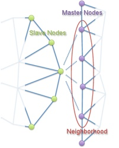

NearestNodeLocator
NearestNodeLocator provides the nearest node on a "Primary" boundary for each node on a "Secondary" boundary (and the other way around).
The distance between the two nodes is also provided.
It works by generating a "Neighborhood" of nodes on the Primary side that are close to the Secondary node.
The size of the Neighborhood can be controlled in the input file by setting the
patch_sizeparameter in theMeshsection.

To use a NearestNodeLocator
#include "NearestNodeLocator.h"call
getNearestNodeLocator(primary_id, secondary_id)to create the object.
The functions
distance()andnearestNode()both take a node ID and return either the distance to the nearest node or aNodepointer for the nearest node respectively.